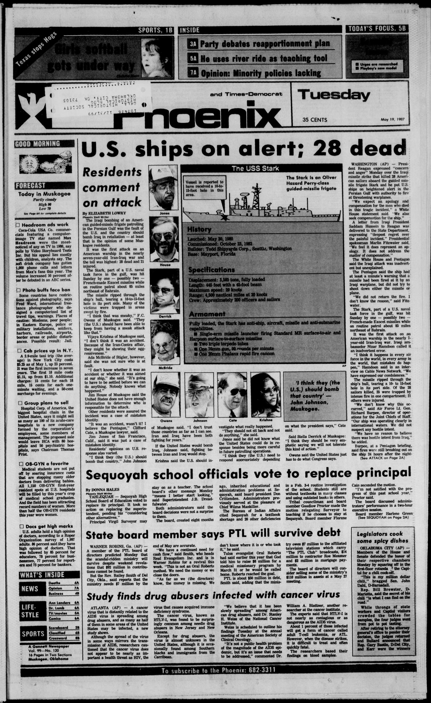

HN-766: USS Stark death count revised upward from 28 to 37
HN-766 · May 19, 1987 · War, Conflict & Security > Wars, Battles & Campaigns > Naval battles

page scanRecorded finding
USS Stark 19 May 1987 Los Angeles Times and Muskogee Daily Phoenix: 28 dead; Washington Post 19 May dispatch/20 May archive: 37 dead or presumed dead.
Discovery narrative
Source: Banner-Graphic, p. 2 — original page; U.S. Navy historical account.
Report: After an Iraqi warplane's missile attack on USS Stark in the Persian Gulf, the Pentagon increased the death toll from 28 to 37; 22 bodies had been identified and 15 sailors were missing and presumed dead.
Assessment: A documented early count correction; 37 is also the Navy's historical total. Missing/presumed dead and recovered/identified were different classifications at the time. The attack was by an Iraqi, not Iranian, aircraft.
Curated audit flag
Class: Printed differences (V)
Recorded difference/concern: USS Stark 19 May 1987 Los Angeles Times and Muskogee Daily Phoenix: 28 dead; Washington Post 19 May dispatch/20 May archive: 37 dead or presumed dead.
Assessment: A documented upward revision; 37 includes presumed dead, status difference matters.
Source links: https://www.washingtonpost.com/archive/politics/1987/05/20/admiral-tells-of-surprise-aboard-stark/6ff23764-b235-45a2-ac3a-0c8fa92b5372/ https://www.latimes.com/archives/la-xpm-1987-05-19-mn-1158-story.html https://gateway.okhistory.org/ark:/67531/metadc2642563/m1/1/
Original archive images (2)
Authentic images retrieved from Gateway to Oklahoma History (Oklahoma Historical Society) and Hoosier State Chronicles (Indiana State Library). Article crops are located using the archive's own OCR word coordinates and rendered at native crop resolution; article clips are assembled from the archive's own article-block images; page images marked "archive tiles" are stitched from the archive's own tiled page service at its 256-px tile cap; page images marked "issue PDF" are single pages rasterised from the archive's own issue PDF, with the page chosen by matching the headline against the PDF's text layer; page scans are reduced-size access renditions. No images were generated, mocked, or retouched.

Gateway to Oklahoma History (Oklahoma Historical Society)
Open larger view · Archive viewer (full resolution)

Hoosier State Chronicles (Indiana State Library)
Open larger view · Archive viewer (full resolution)
Source acquisition
Status: Archive images acquired
Authentic archive-owned image renditions were retrieved for this record and are displayed above. The source-acquisition manifest preserves the original pre-acquisition feasibility assessment.
Original seed
URL (preserved verbatim): https://newspapers.library.in.gov/?a=d&d=BG19870519.1.2
Saved research report: Historical_Newspaper_Event_Research_753-777_2026-10-23.md
Evidence note: A newspaper report means a historical publication made a claim; it does not establish that claim as fact. Contemporary reporting is separated from later scholarly context and our own assessment.